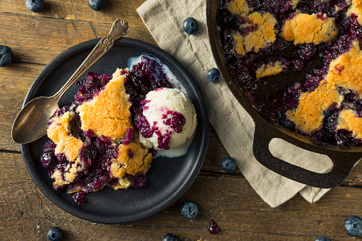
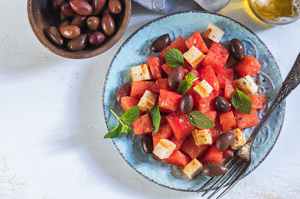
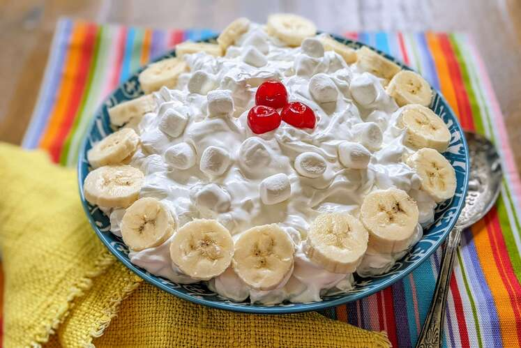

BLUEBERRY GRANITA

DESCRIPTION
A cool and refreshing treat. The more frequently you stir granita, the slushier it will be. The less you stir, the icier it will be.
INGREDIENTS
- 1 and half cup of blueberries
- 1/2 cup of water
- 3/4 cup of water
- 1 tablespoon fresh lemon juice
- Preparation time : 10 mins
- Additional : 3 hours 30 mins
- Servings: 4
STEPS
- Blend the blueberries and sugar in a food processor until smooth; strain through a fine-mesh strainer, pressing with a wooden spoon to separate the blueberry puree from any chunks of skin or seeds.
- Stir the strained blueberry puree, water, and lemon juice together in a shallow glass baking dish or tray. Place the dish in the freezer; scrape and stir the blueberry mixture with a fork once an hour until evenly frozen and icy, about 4 hours. Scrape to fluff and lighten the ice crystals; spoon into chilled glasses to serve.
HALLOUMI, WATERMELON AND MINT SALAD

DESCRIPTION
Halloumi cheese and fresh, juicy watermelon are a fantastic salty-sweet pair. In Cyprus, fresh halloumi slices are served with watermelon for breakfast or dessert, but I think frying the halloumi and adding mint increases the flavor and makes a delightful summer salad.
INGREDIENTS
- 8 ounce package halloumi cheese
- 1 teaspoon olive oil
- 3 cups cubed seeded watermelon
- 12 leaves fresh mint
- 1 small onion
- Preparation time : 10 mins
- Cook: 6 mins
- Servings: 5
STEPS
- Break halloumi cheese into small pieces. Heat olive oil in a skillet over medium heat. Add halloumi and cook and stir until golden, about 3 minutes.
- Toss watermelon cubes, mint leaves, onion slices, and fried halloumi in a salad bowl
HAWAIIAN WATERGATE SALAD

DESCRIPTION
Similar to a Watergate salad, with some of the ingredients changed
INGREDIENTS
- 1 (8 ounce) container frozen whipped topping
- 1 (8 ounce) can crushed pineapple in juice
- ¼ cup instant vanilla pudding mix
- 2 teaspoons instant banana pudding mix, or to taste
- 3 cups miniature marshmallows
- 1 banana, sliced, or more to taste
- Preparation time : 15 mins
- Servings: 20
STEPS
- Mix whipped topping, crushed pineapple with juice, vanilla pudding mix, and banana pudding mix together in a mixing bowl. Add more banana pudding mix until desired flavor is reached. Stir in marshmallows. Serve with sliced banana on top.